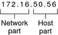
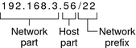

Previous
Previous
IPv6 Addresses
The IETF has deployed 128-bit IPv6 addresses as the long term solution to the shortage of available IPv4 addresses. IPv6 addresses provide greater address space than is available with IPv4. The Solaris OS supports IPv4 and IPv6 addressing on the same host, through the use of dual-stack TCP/IP. As with IPv4 addresses in CIDR format, IPv6 addresses have no notion of network classes or netmasks. As in CIDR, IPv6 addresses use prefixes to designate the portion of the address that defines the site's network. For an introduction to IPv6, refer to IPv6 Addressing Overview.
Private Addresses and Documentation Prefixes
The IANA has reserved a block of IPv4 addresses and an IPv6 site prefix for use on private networks. You can deploy these addresses on systems within an enterprise network but be aware that packets with private addresses cannot be routed across the Internet. For more information on private addresses, refer to Using Private IPv4 Addresses.
Note - Private IPv4 addresses are also reserved for documentation purposes. The examples in this book use private IPv4 addresses and the reserved IPv6 documentation prefix.
Obtaining Your Network's IP Number
An IPv4 network is defined by a combination of an IPv4 network number plus a network mask, or netmask. An IPv6 network is defined by its site prefix, and, if subnetted, its subnet prefix.
Unless your network plans to be private in perpetuity, your local users most likely need to communicate beyond the local network. Therefore, you must obtain a registered IP number for your network from the appropriate organization before your network can communicate externally. This address becomes the network number for your IPv4 addressing scheme or the site prefix for your IPv6 addressing scheme.
Internet Service Providers provide IP addresses for networks with pricing that is based on different levels of service. Investigate with various ISPs to determine which provides the best service for your network. ISP's typically offer dynamically allocated addresses or static IP addresses to businesses. Some ISPs offer both IPv4 and IPv6 addresses.
If your site is an ISP, you obtain IP address blocks for your customers from the Internet Registry (IR) for your locale. The Internet Assigned Numbers Authority (IANA) is ultimately responsible for delegating registered IP addresses to IRs around the world. Each IR has registration information and templates for the locale that the IR services. For information about the IANA and its IRs, refer to the IANA's IP Address Service page.
Note - Do not arbitrarily assign IP addresses to your network, even if you are not currently attaching the network to external TCP/IP networks. Instead, use private addresses as described in Using Private IPv4 Addresses.
Designing an IPv4 Addressing Scheme
Note - For IPv6 address planning information, refer to Preparing an IPv6 Addressing Plan.
This section gives an overview IPv4 addressing to aid you in designing an IPv4 addressing plan. For information on IPv6 addresses, see IPv6 Addressing Overview. For information on DHCP addresses, see Chapter 12, About Solaris DHCP (Overview).
Each IPv4-based network must have the following:
A unique network number that is assigned by either an ISP, an IR, or, for older networks, registered by the IANA. If you plan to use private addresses, the network numbers you devise must be unique within your organization.
Unique IPv4 addresses for the interfaces of every system on the network.
A network mask.
The IPv4 address is a 32-bit number that uniquely identifies a network interface on a system, as explained in How IP Addresses Apply to Network Interfaces. An IPv4 address is written in decimal digits, divided into four 8-bit fields that are separated by periods. Each 8-bit field represents a byte of the IPv4 address. This form of representing the bytes of an IPv4 address is often referred to as the dotted-decimal format.
The following figure shows the component parts of an IPv4 address, 172.16.50.56.
Figure 2-1 IPv4 Address Format
172.16 | Registered IPv4 network number. In class-based IPv4 notation, this number also defines the IP network class, Class B in this example, that would have been registered by the IANA. |
50.56 | Host part of the IPv4 address. The host part uniquely identifies an interface on a system on a network. Note that for each interface on a local network, the network part of the address is the same, but the host part must be different. |
If you plan to subnet a class-based IPv4 network, you need to define a subnet mask, or netmask, as explained in netmasks Database.
The next example shows of the CIDR format address 192.168.3.56/22
Figure 2-2 CIDR Format IPv4 Address
192.168.3 | Network part, which consists of the IPv4 network number that is received from an ISP or IR. |
56 | Host part, which you assign to an interface on a system. |
/22 | Network prefix, which defines how many bits of the address comprise the network number. The network prefix also provides the subnet mask for the IP address. Network prefixes are also assigned by the ISP or IR. |
A Solaris-based network can combine standard IPv4 addresses, CIDR format IPv4 addresses, DHCP addresses, IPv6 addresses, and private IPv4 addresses.
Designing Your IPv4 Addressing Scheme
This section describes the classes into which standard IPv4 address are organized. Though the IANA no longer gives out class-based network numbers, these network numbers are still in use on many networks. You might need to administer the address space for a site with class-based network numbers. For a complete discussion of IPv4 network classes, refer to Network Classes.
The following table shows the division of the standard IPv4 address into network and host address spaces. For each class, "Range" specifies the range of decimal values for the first byte of the network number. "Network Address" indicates the number of bytes of the IPv4 address that are dedicated to the network part of the address. Each byte is represented by xxx. "Host Address" indicates the number of bytes that are dedicated to the host part of the address. For example, in a class A network address, the first byte is dedicated to the network, and the last three bytes are dedicated to the host. The opposite designation is true for a class C network.
Table 2-1 Division of the IPv4 Classes
Class | Byte Range | Network Number | Host Address |
|---|---|---|---|
0-127 | xxx | xxx.xxx.xxx | |
128-191 | xxx.xxx | xxx.xxx | |
192-223 | xxx.xxx.xxx | xxx |
The numbers in the first byte of the IPv4 address define whether the network is class A, B, or C. The remaining three bytes have a range from 0-255. The two numbers 0 and 255 are reserved. You can assign the numbers 1-254 to each byte, depending on the network class that was assigned to your network by the IANA.
The following table shows which bytes of the IPv4 address are assigned to you. The table also shows the range of numbers within each byte that are available for you to assign to your hosts.
Table 2-2 Range of Available IPv4 Classes
Network Class | Byte 1 Range | Byte 2 Range | Byte 3 Range | Byte 4 Range |
|---|---|---|---|---|
0-127 | 1-254 | 1-254 | 1-254 | |
128-191 | Preassigned by IANA | 1-254 | 1-254 | |
192-223 | Preassigned by IANA | Preassigned by IANA | 1-254 |
IPv4 Subnet Number
Local networks with large numbers of hosts are sometimes divided into subnets. If you divide your IPv4 network number into subnets, you need to assign a network identifier to each subnet. You can maximize the efficiency of the IPv4 address space by using some of the bits from the host part of the IPv4 address as a network identifier. When used as a network identifier, the specified part of the address becomes the subnet number. You create a subnet number by using a netmask, which is a bitmask that selects the network and subnet parts of an IPv4 address. Refer to Creating the Network Mask for IPv4 Addresses for details.
Designing Your CIDR IPv4 Addressing Scheme
The network classes that originally constituted IPv4 are no longer in use on the global Internet. Today, the IANA distributes classless CIDR format addresses to its registries around the world. Any IPv4 address that you obtain from an ISP is in CIDR format, as shown in Figure 2-2.
The network prefix of the CIDR address indicates how many IPv4 addresses are available for hosts on your network. Note that these host addresses are assigned to interfaces on a host. If a host has more than one physical interface, you need to assign a host address for every physical interface that is in use.
The network prefix of a CIDR address also defines the length of the subnet mask. Most Solaris 10 commands recognize the CIDR prefix designation of a network's subnet mask. However, the Solaris installation program and /etc/netmask file require you to set the subnet mask by using dotted decimal representation. In these two cases, use the dotted decimal representation of the CIDR network prefix, as shown in the next table.
Table 2-3 CIDR Prefixes and Their Decimal Equivalent
CIDR Network Prefix | Available IP Addresses | Dotted Decimal Subnet Equivalent |
|---|---|---|
/19 | 8,192 | 255.255.224.0 |
/20 | 4,096 | 255.255.240.0 |
/21 | 2,048 | 255.255.248.0 |
/22 | 1024 | 255.255.252.0 |
/23 | 512 | 255.255.254.0 |
/24 | 256 | 255.255.255.0 |
/25 | 128 | 255.255.255.128 |
/26 | 64 | 255.255.255.192 |
/27 | 32 | 255.255.255.224 |
For more information on CIDR addresses, refer to the following sources:
For technical details on CIDR, refer to RFC 1519, Classless Inter-Domain Routing (CIDR): an Address Assignment and Aggregation Strategy.
More general information about CIDR is available from Pacific Bell Internet at Classless Inter-Domain Routing (CIDR) Overview.
Another CIDR overview can be found in the Wikipedia article,"Classless inter-domain routing".